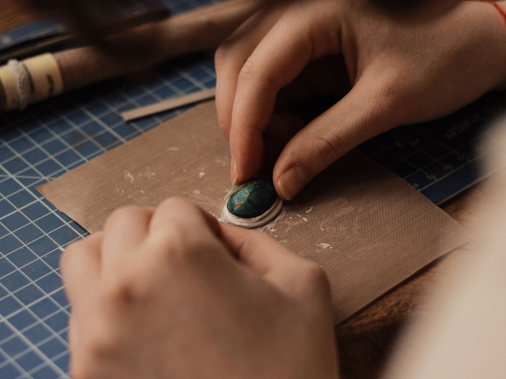
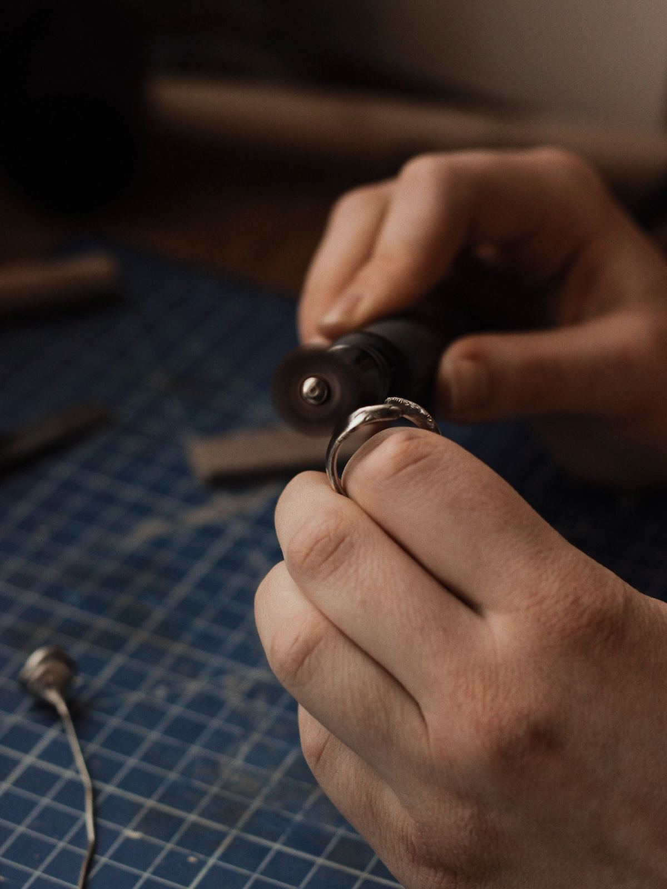

職人の手が、
光を生む。
山梨・甲府のジュエリー工房
ABOUT
甲府の地で、
31年目のものづくり。
株式会社グレースは、山梨県甲府市でジュエリーの製作・加工を行う会社です。工場設立から31年目を迎え、12名の職人がシルバーをはじめとする幅広い貴金属を扱っています。
工場設立
31年目
職人
12名
BUSINESS
主な事業

01
CAD設計・原型製作
デザインをCADで立体化し、製作のもととなる原型をつくります。
02
磨き・石留め
地金の表面を磨いて仕上げ、デザインに合わせて宝石を留めます。


03
OEM製作
ブランドや企業のご依頼に応じて、オリジナルジュエリーを製作します。
COMPANY
会社概要
- 会社名
- 株式会社グレース
- 代表者
- 星山 安奈
- 所在地
- 〒400-0851 山梨県甲府市住吉3-26-16
- 工場・職人
- 工場設立31年目 ／ 職人12名
ACCESS
アクセス
〒400-0851 山梨県甲府市住吉3-26-16
CONTACT
お問い合わせ
製作・加工、OEMのご相談はお気軽にどうぞ。